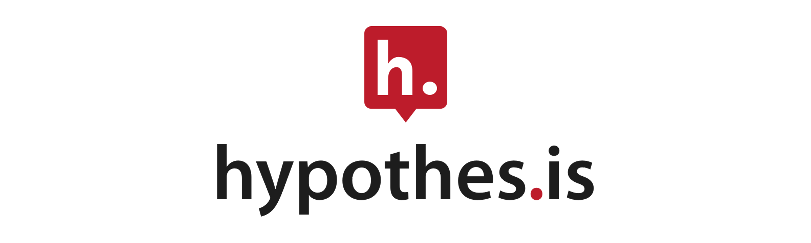
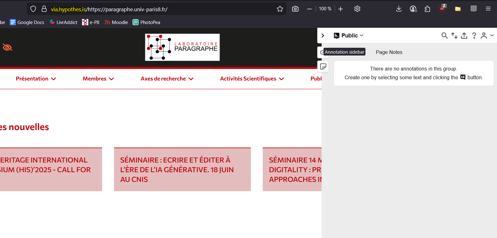
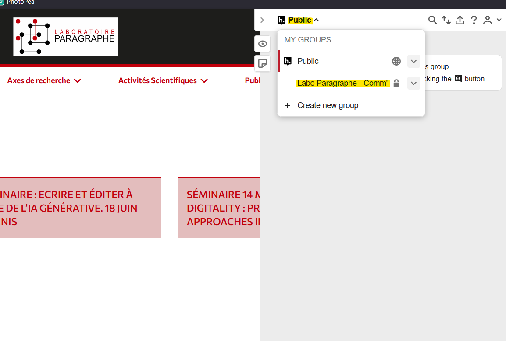
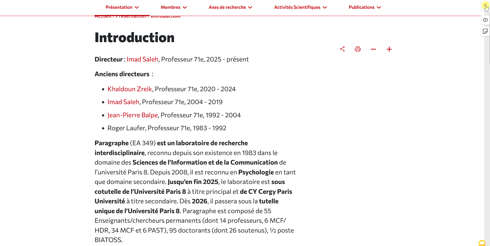

Hypothes.is comme outil collaboratif
Hypothes.is est une application web open source ayant pour objectif principal d’enrichir la lecture en ligne via des annotations collaboratives. En effet, l’application offre aux utilisateurs la possibilité de surligner ou d’annoter des pages web ou des documents PDF comme dans un livre, puis d’y lancer des discussions entre utilisateurs à partir même de ces annotations. Ces annotations peuvent être consultées par les utilisateurs du monde entier, via un canal Public par défaut, ou par un nombre de collaborateurs plus restreint, via la création simple et rapide de groupes collaboratifs privés.

L’application Hypothes.is s’ancre par ailleurs pleinement dans les enjeux académiques des Humanités Numériques en soutenant des pratiques de science ouverte, en favorisant la transparence des processus intellectuels et en offrant un support pour l’écriture critique collective. Intégrée aux environnements de recherche en ligne, Hypothes.is permet ainsi d’ancrer la lecture dans un dialogue actif, rigoureux et collaboratif — au service de la production et de la circulation du savoir.
Usage d’Hypothes.is dans notre cadre professionnel
Dans notre cas, nous allons exploiter le concept d’annotation comme moyen collaboratif de maintenir à jour les données de CartoExpert : dès lors qu’un membre du service repère une coquille (information à préciser, qui n’est plus d’actualité, …), celui-ci pourra laisser une annotation sur l’interface qui, par la suite, pourra être consultée par les opérateurs chargés du maintien du logiciel afin d’y apporter (ou non) les modifications nécessaires.
Par cette nouvelle méthode, l’actualisation des données pourra se faire en continu en plus d’ajouter une dimension collaborative au maintien à jour des données du service.
Prise en main du logiciel
Dans l’ensemble, Hypothes.is est une application très facile à installer et à utiliser lors de la navigation web, celle-ci ayant été pensée comme une extension au navigateur. Les points ci-dessous vous guideront de l’inscription/installation jusqu’à l’intégration du groupe privé Hypothes.is de communication du laboratoire.
Rendre Hypothes.is fonctionnel (simple et efficace)
Création d’un compte personnel
Afin d’avoir accès aux services proposés par Hypothes.is et ainsi partager avec d’autres utiliateurs vos annotations, il est nécessaire avant tout de se créer un compte. Plusieurs formules sont disponibles, payantes comme gratuites. Pour l’usage que nous voulons en faire, cette dernière suffit amplement. - Création de compte : https://web.hypothes.is/web-app-start/
NOTE : Afin de permettre une bonne identification du personnel du laboratoire, il est préférable d’utiliser des identifiants public facilement reconnaissable, comme à titre d’exemple : - Prenom_InitialNom - Nom_Prenom - E-mail - Etc.
Accéder à l’interface de Hypothes.is
L’interface de Hypothes.is est accessible par deux moyens :
Via le proxy de l’application Hypothes.is
C’est la méthode la plus simple, mais aussi la plus redondante : il suffit d’ajouter https://via.hypothes.is/ avant l’URL de la page que l’on souhaite annoter.
Exemple : Pour annoter la page : https://paragraphe.univ-paris8.fr/, il faut ouvrir : https://via.hypothes.is/https://paragraphe.univ-paris8.fr/`. La page s’ouvrira avec le volet d’annotation activé, à droite de l’écran.

Il est tout à fait envisageable de créer des marque-pages en appliquant la méthode mentionnée précédemment directement sur le lien du marque-page, notamment pour les pages web sur lesquelles vous revenez régulièrement.
Accéder à un groupe d’annotation collectif
Pour rejoindre le groupe d’annotation du laboratoire Paragraphe, utilisez directement ce lien. Autrement, il est également possible de créer ses propres groupes en allant dans (à compléter)
Dès lors qu’il sera question de poster une annotation sur le groupe, il faudra bien penser à sélectionner le groupe en question au risque de voir l’annotation apparaître dans le canal “Public” et d’avoir moins de chance d’être vue. En cliquant sur “Public” (en haut de l’interface dynamique), puis sur le groupe rejoint. Si le groupe n’apparait pas, c’est qu’il n’a pas été intégré.

Commencer à annoter
Une fois connecté à Hypopthes.is, l’interface ouverte et le groupe rejoint, il est temps de commencer à annoter !

Description du GIF étape par étape :
Étape n°1 : D’abord, s’assurer que Hypothes.is est bien lancé en vérifiant si le menu à droite de l’écran peut s’ouvrir. Si ce n’est le cas, cliquez sur l’icone de l’extension pour la démarrer ou assurez vous que votre URL est correctement modifié).
Étape n°2 : Sélectionner la partie du document à annoter en le surlignant. Une fois le surlignage effectué, une bulle va apparaître avec les options “Highlight” et “Annotate” : Le premier permet d’uniquement surligner tandis que le second permet d’annoter l’élément en plus de le surligner. La deuxièmem option est donc à privilégier du dialogue.
Étape n°3 : Une fois “annotate” sélectionné, l’interface s’ouvre. Remplissez la zone de texte avec vos idées, ajoutez des mots clefs (“suggestion” ou “modifier” par exemple) dans la zone en dessous dédiée aux “tags”. Enfin, cliquez sur “Post to [nom du groupe]”.
Si, au moment de publier, il est noté “Post to Public”, c’est que vous êtes resté dans le canal Public ! N’oubliez pas de le changer en haut de l’interface.
Étape n°4 : La note est maintenant publiée ! Les autres usagers sur le groupe peuvent maintenant lire et interagir avec votre annotation.